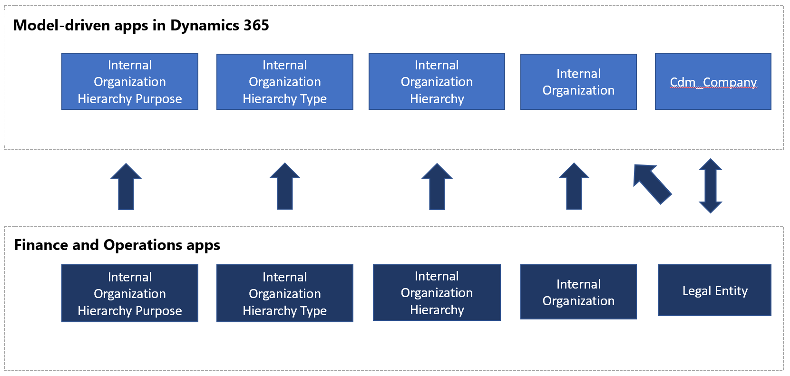

Organization hierarchy in Dataverse
[!include[rename-banner](~/includes/cc-data-platform-banner.md)]Because Dynamics 365 Finance is a financial system, organization is a core concept, and system setup starts with the configuration of an organization hierarchy. Business financials can then be tracked at the organization level and also at any level in the organization hierarchy.
Although Dataverse doesn't have the concept of an organization hierarchy, it does have a few loose concepts, such as total sales revenue. As part of Dataverse integration, the organization hierarchy data structure is added to Dataverse.
Data flow
A business ecosystem that consists of Finance and Operations apps and Dataverse will continue to have an organization hierarchy. This organization hierarchy is built on Finance and Operations apps, but it's exposed in Dataverse for informational and extensibility purposes. The following illustration shows the organization hierarchy information that is exposed in Dataverse as a one-way data flow from Finance and Operations apps to Dataverse.

Organization hierarchy table maps are available for one-way synchronization of data from Finance and Operations apps to Dataverse.
Templates
Product information contains all the information related to the product and its definition, such as the product dimensions or the tracking and storage dimensions. As the following table shows, a collection of table maps is created to sync products and related information.
| Finance and Operations apps | Other Dynamics 365 apps | Description |
|---|---|---|
| Organization hierarchy purposes | msdyn_internalorganizationhierarchypurposes | This template provides one-way synchronization of the Organization Hierarchy Purpose table. |
| Organization hierarchy type | msdyn_internalorganizationhierarchytypes | This template provides one-way synchronization of the Organization Hierarchy Type table. |
| Organization hierarchy - published | msdyn_internalorganizationhierarchies | This template provides one-way synchronization of the Organization Hierarchy Published table. |
| Operating unit | msdyn_internalorganizations | |
| Legal entities | msdyn_internalorganizations | |
| Legal entities | cdm_companies | Provides bidirectional synchronization of legal entity (company) information. |
Mapping tables
Mapping types
There are several different mapping types. The following table explains the symbols used in the template tables.
| Symbol | Description |
|---|---|
| > | One-way |
| >> | One-way, and data is transformed in the process. |
| = | Bidirectional |
| >< | Bidirectional, and data is transformed in the process. |
| << | One-way, and data is transformed in the process. |
Filters
The source filter and reverse source filter determine which rows are synchronized.
Default values
If a synchronized field does not exist in either the Finance and Operations table or the other Dynamics 365 table, then a default value is assigned in the synchronized table. In some cases, the default value is an integer that is a lookup to an attribute value in the Common Data Model. For example, in the Contacts table of the Common Data Model, the default value of address1_addresstypecode is 3. In the Common Data Model, for address1AddressTypeCode the value of 3 is Primary address.
Organization hierarchy purposes to msdyn_internalorganizationhierarchypurposes
This template synchronizes data between Finance and Operations apps and Dataverse.
| Finance and Operations field | Map type | Customer engagement field | Default value |
|---|---|---|---|
| HIERARCHYTYPE | > | msdyn_hierarchypurposetypename | |
| HIERARCHYTYPE | > | msdyn_hierarchytype.msdyn_name | |
| HIERARCHYPURPOSE | >> | msdyn_hierarchypurpose | |
| IMMUTABLE | >> | msdyn_immutable | |
| SETASDEFAULT | >> | msdyn_setasdefault |
Organization hierarchy type to msdyn_internalorganizationhierarchytypes
This template synchronizes data between Finance and Operations apps and Dataverse.
| Finance and Operations field | Map type | Customer engagement field | Default value |
|---|---|---|---|
| NAME | > | msdyn_name |
Organization hierarchy - published to msdyn_internalorganizationhierarchies
This template synchronizes data between Finance and Operations apps and Dataverse.
| Finance and Operations field | Map type | Customer engagement field | Default value |
|---|---|---|---|
| VALIDTO | > | msdyn_validto | |
| VALIDFROM | > | msdyn_validfrom | |
| HIERARCHYTYPE | > | msdyn_hierarchytypename | |
| PARENTORGANIZATIONPARTYNUMBER | > | msdyn_parentpartyid | |
| CHILDORGANIZATIONPARTYNUMBER | > | msdyn_childpartyid | |
| HIERARCHYTYPE | > | msdyn_hierarchytypeid.msdyn_name | |
| CHILDORGANIZATIONPARTYNUMBER | > | msdyn_childid.msdyn_partynumber | |
| PARENTORGANIZATIONPARTYNUMBER | > | msdyn_parentid.msdyn_partynumber |
Internal Organization
Internal organization information in Dataverse comes from two tables, operating unit and legal entities.
Operating unit to msdyn_internalorganizations
This template synchronizes data between Finance and Operations apps and Dataverse.
| Finance and Operations field | Map type | Customer engagement field | Default value |
|---|---|---|---|
| LANGUAGEID | > | msdyn_languageid | |
| NAMEALIAS | > | msdyn_namealias | |
| NAME | > | msdyn_name | |
| PARTYNUMBER | > | msdyn_partynumber | |
| OPERATINGUNITTYPE | >> | msdyn_type |
Legal entities to msdyn_internalorganizations
This template synchronizes data between Finance and Operations apps and Dataverse.
| Finance and Operations field | Map type | Customer engagement field | Default value |
|---|---|---|---|
| NAMEALIAS | > | msdyn_namealias | |
| LANGUAGEID | > | msdyn_languageid | |
| NAME | > | msdyn_name | |
| PARTYNUMBER | > | msdyn_partynumber | |
| none | >> | msdyn_type | 806380000 |
| LEGALENTITYID | > | msdyn_companycode |
Legal entities to cdm_companies
This template synchronizes data between Finance and Operations apps and Dataverse.
| Finance and Operations field | Map type | Customer engagement field | Default value |
|---|---|---|---|
| NAME | = | cdm_name | |
| LEGALENTITYID | = | cdm_companycode |